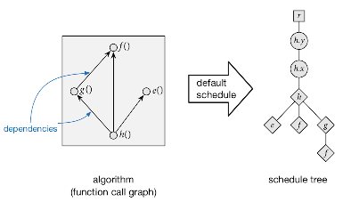
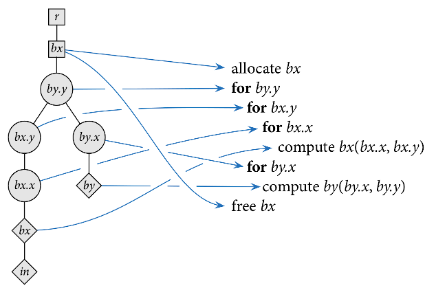
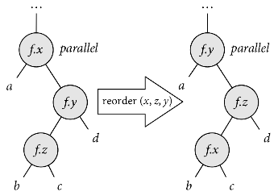
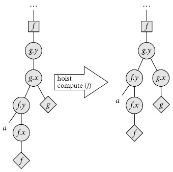
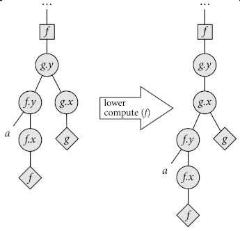
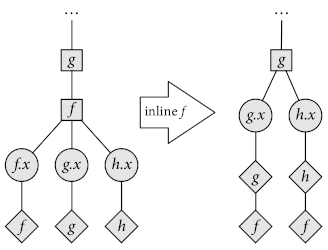
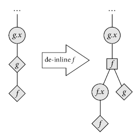

A Toy Halide Autoscheduler
This post was written for the Cornell CS 6120 Fall 2019 class blog with Gabriela Correa Calinao and Ryan Doenges. See the original version here.
Halide is a domain-specific language embedded in C++ for writing code that processes images and, more generally, arrays. The main innovation of Halide is that it separates algorithm — the actual function being computed – from schedule — the decisions regarding when to perform computations and when to store intermediate results. This allows developers to write the function that their image pipelines implement once and then performance-tune the implementation by swapping out schedules — different schedules can be used for different platforms while not modifying function code.
Writing an efficient schedule for Halide functions requires expertise in performance tuning. To alleviate this, in this project we create a toy autoscheduler for Halide that attempts to automatically generate an efficient schedule for Halide functions. (Note that Halide has an autoscheduler built-in: see this paper for more information.)
Our autoscheduler is implemented in Python 2.7 and can be found at this repository.
Design Overview
The following presentation of schedules as trees manipulated by schedule transformers closely follows Chapter 7 of Jonathan Ragan-Kelley’s thesis. The images below are from that document.
In order to search for schedule, we represent them as schedule trees, wherein the ancestry relationships between nodes represent ordering information. Schedule trees have the following kinds of nodes:
-
Root nodes represent the top of the schedule tree.
-
Loop nodes represent the traversal of how the function is computed along a given dimension. Loop nodes are associated with a function and a variable (dimension). Since functions are assumed two-dimensional, by default functions have two variables: x and y. Loop nodes also contain information such as whether the loop is run sequentially, run in parallel, or vectorized.
-
Storage nodes represent storage for intermediate results to be used later.
-
Compute nodes are the leaves of the schedule tree, and they represent computation being performed. Compute nodes can have other compute nodes as children to represent functions that are inlined instead of loaded from intermediate storage.
Schedule trees are considered well-formed if they satisfy the following criteria:
-
The ancestry path from a function’s compute node to the root node contains all the loop nodes and the storage node (if the function is not the output1) for that function. Intuitively, this means that the traversal of how the function is computed is completely defined, and storage for the function’s results is available.
-
If a function calls another function and the callee is not inlined, the compute node for the callee must occur before the compute node of the caller in a depth-first traversal. Intuitively, this ensures that the callee’s results are stored before the caller is computed.
For any function we can define the default schedule, which traverses the output function in row-major order and inlines all called functions, like so:

We can give a semantics for schedule trees as nested loops. Consider the schedule below for three functions, in, bx, and by, where by calls bx and bx calls in. The schedule tree on the left represents the nested loop on the right.

Schedule Transformers
We define transformers over schedule trees. We use these to traverse the search space of schedules.
-
Split - split a function’s variable into two. For example, we can split a function’s
xvariable intox_innerandx_outer. This allows tiered traversal of a function’s extent along one dimension. For example, splitting thexvariable changes this loop:for x in [1..16]: a[x] = ...into:
for x_outer in [1..4]: for x_inner in [1..4]: a[(x_outer*4)+x_inner] = ...Combined with reorder, split can represent schedules that tile computations.
-
Change Loop Type - change how the loop will be traversed; by default the loop type is
sequential, but it could also beparallel,unrolled, orvectorized. For simplicity our implementation only supportssequentialandvectorized. -
Reorder - switch loop nodes for the same function.
-
Hoist / lower compute - change the granularity in which intermediate results are computed.
-
Hoist / lower storage - change the granularity in which storage for intermediate results is allocated.
-
Inline / deinline - inline functions into callers (don’t store their results in intermediate storage) or deinline function out of callers. Intuitively, inlining functions trades off smaller memory usage for redundant computations, while de-inlining trades off higher memory usage for fewer redundant computations.
Below are some diagrams to give intuition to how these scheduler transformers work.





Bounds Inference
Now that we have a representation for schedules and a set of
schedule transformers, we are close to arriving at a search algorithm
for finding efficient schedules.
The last component that we need is a notion of cost for schedules.
In order to provide a cost model for schedules, we need to determine the
number of iterations performed by loops in the schedule.
This determines the number of times instructions inside the body of loops
will be executed, as well as the size of intermediate storage to be
allocated.
We determine this by computing the extent in which functions will be computed.
For the output function, we assume that the extent is given by a call to the
realize function.
For called functions that are not inlined, the extent is the dimensions of
the function that will be stored as intermediate results.
Because storage will be reused depending on the granularity
with which intermediate results are stored, the extent of called functions
does not necessarily coincide with the total extent over which the function
will be computed (e.g., the called function might be computed on
a per-scanline basis).
For example, consider the simple pipeline below that has one producer (g)
and one consumer (f):
g(x, y) = x * y
f(x, y) = g(x, y) + g(x+1, y+1)
Given that f is realized in a 512x512 box and a schedule where g is
computed in total before computing f, the extent of g is 513x513.
Computing the extent in which functions will be computed is hard in general,
but since Halide makes the simplifying assumption that all extents are
rectangular (as opposed to, say, polytopes in the polyhedral model),
there is a simple method for doing this:
we only need to check the maximum and minimum points of the caller functions
and check the arguments to the callee.
Note that we also assume that function arguments are drawn from a grammar
of “simple” arithmetic expressions consisting only of +, -, *, /,
variables and constants.
In the example above, the extent of f is defined by the box bounded by
(1,1) and (512, 512).
The arguments to g at these points are:
- at
(1,1):(1,1), (2,2) - at
(512,512):(512,512), (513,513)
Thus we can determine the extent of g to be 513x513.
We encode these caller-callee relationships into logical formulas and use the Z3 SMT solver to a retrieve model that contains concrete values for the arguments.
Search Algorithm for Schedules
Once loop sizes have been inferred, we have enough information to determine important execution features of the schedule, such as how much memory it will allocate and how many operations it will perform. The cost of the schedule is then a weighted sum of these data points.
By default our implementation groups execution features into the following:
-
mem - amount of memory allocated
-
loads - number of intermediate results loaded from storage
-
stores - number of intermediate results stored
-
arithmetic operations - number of
+,-,*and/operations performed -
mathematical operations - number of
sin,cos,tan,sqrtoperations performed
Each of these groups has a weight that determines the importance of these features with respect to the schedule’s cost (see Evaluation below).
Now that we can give a notion of cost to schedules, we can search for efficient schedules. We use beam search as our search algorithm, with the default schedule as the starting node. We describe the concrete parameters used for search below in Evaluation.
Conversion to Halide
Once we have a candidate schedule tree, we convert it into Halide. We do this by checking the ancestry path from compute nodes: this path determines whether a function’s variables are split, the traversal order for computing the function, and, for called functions, the granularity at which the function is stored and computed.
Consider the schedule above for the functions bx, by, and in.
Converted into Halide code, the schedule looks like the following:
by.reorder(y, x);
bx.store_root();
bx.compute_at(by, y);
bx.reorder(y, x);
Evaluation
We evaluate the performance of the autoscheduler over three benchmarks.
We do this by comparing the performance of the autoscheduled run
(OPT configuration) vs. the run with the default schedule (DEF configuration).
We measure runtime and memory usage using gprof.
For the experiments, we set the weights for execution features as follows:
| Group | Weight |
|---|---|
| mem | 0.1 |
| loads | 0.5 |
| stores | 0.5 |
| arith ops | 1.0 |
| math ops | 10.0 |
We run beam search with a depth of 10 and beam width of 300.
For all benchmarks, the output functions are realized across an extent of 2048x2048. The results below are averaged across three runs.
Benchmark 1
g(x,y) = sqrt(cos(x) + sin(y));
f(x,y) = g(x + 1,y) + g(x,y) + g(x + 1,y + 1) + g(x,y + 1);
| Function | Runtime (ms) | Peak heap usage (bytes) |
|---|---|---|
| f (DEF) | 87.72 | 0 |
| f (OPT) | 13.48 | 0 |
| g (DEF) | N/A | 0 |
| g (OPT) | 172.70 | 32874 |
Benchmark 2
blur_x(x,y) = input(x - 1,y) + input(x,y) + input(x + 1,y) / 3;
blur_y(x,y) = blur_x(x - 1,y) + blur_x(x,y) + blur_x(x + 1,y) / 3;
| Function | Runtime (ms) | Peak heap usage (bytes) |
|---|---|---|
| blur_y (DEF) | 12.70 | 0 |
| blur_y (OPT) | 19.02 | 0 |
| blur_x (DEF) | N/A | 0 |
| blur_x (OPT) | 16.16 | 16400 |
Benchmark 3
f(x,y) = x + y;
| Function | Runtime (ms) | Peak heap usage (bytes) |
|---|---|---|
| f (DEF) | 11.85 | 0 |
| f (OPT) | 12.18 | 0 |
Discussion
Note that for the DEF configuration, only the output functions have runtimes associated with them since all called functions are inlined.
The autoscheduler performs rather poorly relative to the default schedule.
While it successfully makes space-runtime tradeoffs (e.g., f in Benchmark 1),
allowing the computation of a function to run much faster by saving
intermediate results, it runs more slowly and uses more memory than the
default schedule across all benchmarks.
We believe the poor performance of the autoscheduler has two main causes:
-
Wrong feature weights. The feature weights for the cost model are chosen by fiat; if these were learned instead given a set of training data, then more the weights can probably better capture the execution profile of schedules.
-
Missing execution features. There are some execution features not captured in the current cost model that probably has a significant effect on performance. Most importantly, the cost model does not reason about locality. Because of this, the autoscheduler sometimes generates schedules with loop order that has poor locality (e.g., a function being traversed in column-major order instead of row-major order). It is not clear how to quantify locality in the cost model, but it is an obvious extension to the cost model.
-
By convention the output function does not have a storage node in the schedule tree since it is assumed that storage for the output has already been allocated and thus there is no decision to be made about the granularity with which to allocate it. ↩︎